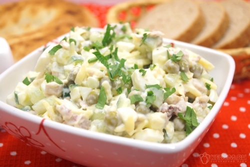

Главная страница
Салат с курицей

Описание
Вкусный и сытный салат с курицей и зеленым горошком будет кстати на любом столе. Готовится быстро и быстро съедается.
Ингредиенты
- Куриные окорочка 1 шт.
- Яйца 3 шт.
- Консервированный зеленый горошек 50 г
- Майонез 3 ст. л.
- Свежий огурец 1 шт.
- Сыр твердый 150 г
- Зубчик чеснока 2 шт.
- Соль по вкусу
Приготовление
- Куриный окорочок и яйца отварить до готовности, остудить.
- Яйца мелко порубить в миску, добавить тертый сыр.
- Добавить кубиками нарезанный огурец и зеленый горошек.
- Добавить мелко нарезанное куриное мясо и прессованный чеснок. Заправить майонезом, посолить по вкусу.
- Выложить в салатник и посыпать мелко нашинкованной петрушкой.
- Вкусный салат с курицей и зеленым горошком готов. Дать салату настояться и подавать к столу.
Приятного аппетита!